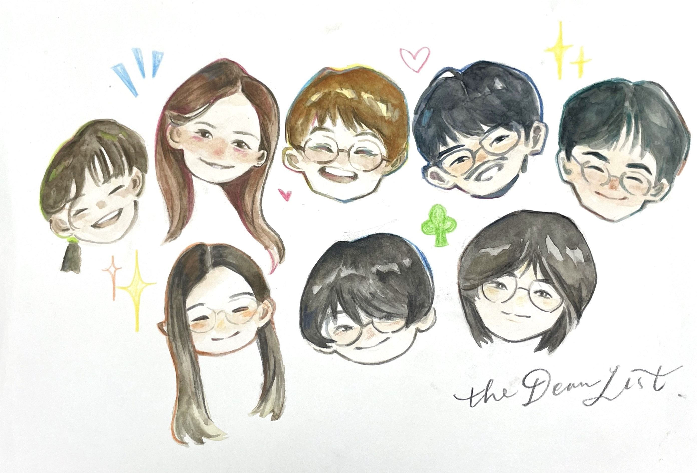

Serena
何其幸運能結識 Elaine，短短的交談，卻為我帶來深刻的啟迪。做人切莫怕吃虧，貴在堅持。人生浮沉無常，與其隨遇而安，倒不如破釜沉舟，把握當下。
Chapter 05 · Afterword
謝謝 Elaine 讓我們走進她的人生。這些話，是我們在訪談和製作小冊子後，想留下的回應。

A Small Book Of Thanks
Elaine 的分享提醒我們，人生不必停在等待裡；即使要改變走法，也仍然可以保留想走下去的心。以下是同學們想親口告訴你的話。
何其幸運能結識 Elaine，短短的交談，卻為我帶來深刻的啟迪。做人切莫怕吃虧，貴在堅持。人生浮沉無常，與其隨遇而安，倒不如破釜沉舟，把握當下。
很開心認識 Elaine! 謝謝你給我們分享你的人生經驗，真的讓我獲益良多！很佩服你的勇氣和樂觀，我們大家都要帶着喜樂的心走下去！
Elaine, thank you for sharing a piece of what you’ve lived. You said life shouldn’t stop in waiting, and we have made this story for you. We will hold your reminders as we live.
Elaine，好多謝你讓我們走進你的人生。訪談後，我一直記得你說，行不了獅子山，就改行較容易的山。作為學生，我非常容易把目標看成一道界線，好像一定要按原定時間，用原定方式到達，才算做得好。但是你的分享卻讓我想到，改變走法也可以是一個認真對待自己的決定。知道自己現在能走多遠，同時保留想走下去的心，並不容易。 你對新事物的好奇也令我反問自己：我現在有機會讀書，是否有好好享受學習，還是常常只想着交功課和追分數？你爭取過的課堂、珍惜的校園生活，提醒我留意那些已經擁有、卻容易視作理所當然的機會。 寫這本小冊子時，我最想留下的，是你談起學習和興趣時，那份仍然想知道多一點的心情。希望你翻閱時，能認出自己的聲音，也知道你的分享，讓一個比你年輕許多的學生，重新想過自己可以怎樣讀書、怎樣生活。希望你日後一切順順利利！！🥰
好高興可以認識Elaine! 你係我見過最樂觀正面既人，我覺得你不怕困難，努力頂硬上既心態非常值得我地學習。 你話過面對挫折時喊其實冇用，其他人唔會等你，你只能儘快收拾心情繼續為目標努力，一條路唔得就搵第二條，直到成功為止，而最後你既故事都成功驗證努力係有回報，即使道路不好行，也會走過許多彎路，只要堅持便會到達終點。 亦都恭喜你可以在科大享受年輕時未能如願的大學生活，認識唔少珍視你的同事和老闆，至於不能完夢的遊學經歷，請你細心欣賞我們的作畫和故事，希望你會喜歡~~ 最後都祝願你能保持快樂，健康生活，繼續學習有興趣的事物／技能／運動，相信總有一日你可以親自到英國／澳洲完夢，Elaine Fighting!
謝謝你的分享！短短三小時的詳談，你對新事物的好奇心深深感染了我，我會記住你面對挫折的韌性，好好珍惜現在的校園生活，不盲目追趕進度而錯過沿途風景。雖然只認識短短三個小時，但你的經歷已為我們留下了深刻的印記！
Elaine! 好高興可以有機會認識到你，可以親身同好似你咁見多識廣嘅人去對話嘅經驗真係第一次。 你同我哋講嘅嘢，好多都係我意想不到的經歷，令我發現人生中試錯機會真係好多！又令我對自己嘅前路冇咁迷惘了，亦都令我肯定自己都想成為像你一樣「乜都試吓」嘅人。 未來嘅你肯定仲喺度不斷嘗試唔同嘅新事物，希望我以後都可以跟你學嘢，學你嘅好學同埋「喜樂的心」！